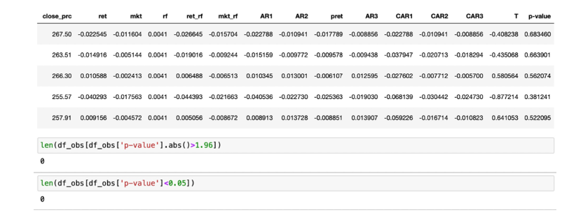

Portfolio Analysis
EVENT STUDY of BYD
On October 22, 2022, BYD issued a performance forecast that the net profit attribute to shareholders of listed companies from January to September 2022 will be: 9.1 billion yuan to 9.5 billion yuan, and the range of change compared with the same period last year: 272.48% to 288.95%.
To study the effects on the performance of BYD brought by this event, we choose the Estimation Period and Observation Period as bellow:
The Observation period starts from five days before the event, because there may be some relevant preludes or information leakage before the event, which means that BYD’s performance could have been influenced by the event to some extent.
Observation Period lasts for 1 month (about 20 trading days) and the Estimation Period lasts for 1 year (about 252 trading days).
Then we plotted the performance of BYD’s Close Price over the Estimation and Observation periods (the green line is the boundary of two periods and the red line represents the event day). We found that the close price of BYD did not show obvious abnormalities in the Observation Period and we will test this hypothesis in the following steps.
In order to exclude the influence of risk-free rate on our results, we subtracted the risk-free rate from both the BYD return and market return.
Then we plot the BYD return and market return with risk-free rate excluded on the same graph and we found that they are highly correlated with each other. Therefore, mkt_rf will be a qualified candidate for our model estimation.
Next, we will estimate the model using three different methods:
Means-adjusted returns model
Market-adjusted returns model
Risk adjusted returns model
（1）Means-adjusted returns model
Benchmark = average of the stock’s return in the estimation period
Abnormal Return (AR) = return in the observation period – Benchmark
Note: risk-free rate has been subtracted from all returns in our model
（2）Market-adjusted returns model
Benchmark = the market return in observation period
Abnormal Return (AR) = return in the observation period – Benchmark
（3）Risk-adjusted returns model
Firstly, fit the regression using estimation period: ret_rf = alpha + beta * mkt_rf
Secondly, calculate the predicted return in observation period using alpha and beta in Step1: pret = alpha + beta * mkt_rf (Benchmark)
Thirdly, calculate the Abnormal Return: AR = return in the observation period – pret
Then we plotted the Abnormal Return and Cumulative Abnormal Return for the three models:
The three methods generated similar results.
However, there is no clear trend in the abnormal returns obtained by these three methods.
The high net profit attribute to shareholders of listed companies should be an indicator of
BYD’s good performance and promising future development, but its return decreases right after the event happened, which is counterintuitive.
The performances of CAR are similar for the three methods.
For most of the time in observation period, the CARs are negative, which means that the
event had negative effects on the stock performance in general.
The CARs become positive around 2022-11-05. However, since it is far from the event
day and others showing a opposite result, it can be inferred that it had little relationship with the event.
Finally, we used t-statistic and p-value to test whether the return is abnormal at conventional levels of significance, we found that no t-stat larger than 1.96 and no p-value smaller than 0.05, indicating that it is not statistically significant at conventional levels of significance. Therefore, the performance of BYD is not abnormal. The reasons for this counterintuitive result could be the pandemic situation affected citizens’ purchasing power which may lead to the decrease for stocks in the auto industry or some prominent investors have cut back on BYD shares, leading some people to follow his or her action.

To do the further event study, we need to calculate the Average Abnormal Return (AAR). During the past 10 years, there are 54024 forecasts on the net profit change range attributable to owners of the parent company (upper limit)%. We divided the performance forecast into 2 types of events: positive events and negative events.
All these reports were published quarterly, so all events happened at the end of March, June, September and December and there are 40 event occurrence dates in total. We should first select corresponding Estimation Period and Observation Period according to these dates.
- The Observation period starts from 10 days before the event.
- Observation Period lasts for 1 month (about 20 trading days) and the Estimation Period lasts for 1 year (about 252 trading days).
Then we need to calculate the Average Abnormal Return (AAR) for each event:
（1） For each positive event, we found the corresponding stocks with positive prediction on that event day. Then we extracted these stocks from the overall table.
（2） We split the data into estimation period and observation period according to the DATE TABLE we got.
（3） We chose Risk-adjusted returns method to estimate our model. Before doing the regression, we first checked the number of date for each stock in the estimation period. If the number is very small, the regression will be meaningless. Here we excluded the stocks with less than 30 days in the estimation periods.
（4） We got the regression result from the estimation period and merge the alpha and beta into the observation period and calculate the AR (different on each stock each day).
（5） We calculate the AAR by taking the average of the AR on each day in observation period.
（6） We use a for loop to redo it for every positive events and recorded all AARs for the observation periods of all events.
（7） Repeated it for the negative events.
The Cumulative Average Abnormal Return (CAAR) is the sum of each column in the above table. It represents the impact of this type of event on the stock performance from the beginning of the observation period to the end. Then we plotted the CAAR for both types of events:

The CAARs for positive events and negative events behave very much alike. This means that the events do not have a decisive impact on its stock price. This similarity may be due to the fact that all stocks are influenced by the market force, which is much more significant than published report.
For positive events, sometimes CAAR is greater than 0, sometimes less than 0. This indicates that positive events have no significant effect on stock performance.
For negative events, most of the time the CAAR is negative, which means that negative events usually bring negative impacts on the stock performance.
The CAARs for positive events are generally higher than the negative events, indicating that the positive events have a more positive effects on the stock performance compared to negative events.
If we long the stocks with positive prediction and sell the stocks with negative prediction, our CAAR will be positive for almost the entire observation period, which means that we are very likely to earn profit from this strategy:

LONG SHORT PORTFOLIOS
long-short portfolio is an investment strategy that involves taking both long positions (buying assets) and short positions (selling assets that are not owned) in financial instruments simultaneously. The goal is to profit from the relative performance of the assets. There are several different indicators for long-short portfolios building, here we select the following 6 widely used indicators:
（1） Price: ln (price by the end of previous month)
（2） Volume Variance: the standard deviation of the volume in the past 3 years
（3） Amihud’s Liquidity Measure: the average of the ratio – absolute value of daily return / daily trading volume in the past 1 year
（4） Short-term Reversal: the monthly return in the last month
（5） 52-week High: closing price / the highest price in the past year
（6） Max: maximum daily return in the last month
There are also many different metrics for the long-short portfolio performance, here we also select 5 representative indicators:
- Annualized Return
- Annualized Volatility
- Sharpe Ratio: (Annualized return– annualized risk-free rate) / Annualized volatility
- Winning Rate: the number of days with positive return / total days
- Maximum Drawn Down: (maximum return – minimum return) / maximum return
Here is the result we got:
Based on the annualized return, Strategy2 is the best portfolio, followed by Strategy1.
The annualized volatility of these portfolios are relatively close to each other.
Stragegy2 achieves the highest Sharpe Ratio, which indicates the best performance.
All winning rates of these portfolios are around 50% and Strategy5 is the one with highest number of positive return days.
However, strategy5 also achieve the highest maximum drawn down, which means that is has the highest downside risk.
The Net-Value Curve for Long-short Portfolios:
All these portfolios perform show the similar tendency over specific period. For example, the abnormal cumulative return in 2015 correspond with the stock market crush in that year.
However, these portfolios lagged behind changes in stocks because in the middle of 2015, the stock market crush already began. This is reasonable because the indicators we use to construct the long-short portfolio always have a time span. Therefore, we can conclude that the long- short portfolios can reflect the market status to some extend, but not immediate reflection.
The net-value curves coincide with our precious analysis: the Strategy1(Price) and Strategy2(Volume Variance) generate the highest return. Though with a relatively higher volatility, they still turn out to be the most profitable strategies with high Sharpe ratio.